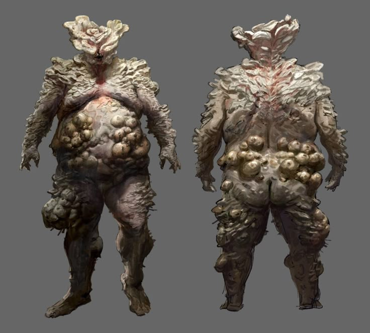

Bloaters são uma das formas mais perigosas e desfiguradas de zumbis. Sua pele está coberta por uma grossa camada de fungos, tornando-os quase imunes a ferimentos menores. Eles também podem lançar esporos contaminados como uma arma.
 Voltar Próximo